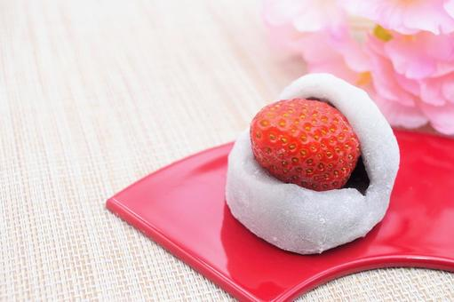
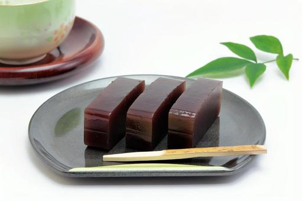
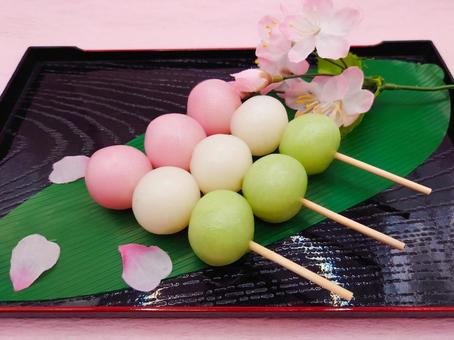
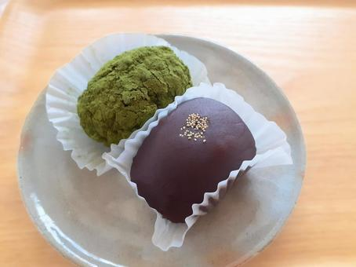

大福
大福はお餅をあんこで包んだお菓子のことです。
もちもちの皮と中の甘いあんこのコンビが最高です。
材料
- もち米粉 200g
- 砂糖 100g
- 水 200ml
- あんこ 200g
- 片栗粉 適量
作り方
- もち米粉と砂糖をボウルに入れ、よく混ぜる。
- 水を少しずつ加えながら生地をこね、なめらかな生地にする。
- 生地を20gずつに分け、丸める。
- あんこを20gずつに分け、丸めた生地を包む。
- 片栗粉を薄くまぶし、形を整える。
- 蒸し器に水を入れ、大福を蒸し器の上に並べて15分間蒸す。
- 蒸した大福を取り出し、冷ましてからお召し上がりください。
ようかん
ようかんはあんこに砂糖や寒天を混ぜて固めたお菓子のことです。
しっかりとした食感と滑らかな食感両方を楽しむことができます。
材料
- 小豆 200g
- 砂糖 150g
- 水 400ml
- 片栗粉 適量
作り方
- 小豆を綺麗に洗い、水に浸けて一晩置く。
- 小豆を鍋に入れ、水を加えて中火にかけ、煮立ったら弱火にして1時間半〜2時間程度煮る。途中、アクを取りながら煮る。
- 火を止め、小豆をすり鉢で潰すか、フードプロセッサーでペースト状にする。
- 鍋に小豆のペーストと砂糖を入れ、弱火にかけて砂糖が溶けるまで混ぜる。
- 片栗粉を少量の水で溶いて、小豆ペーストに加え、とろみがつくまで煮る。
- 型に流し入れ、冷まして固まったら切り分けてお召し上がりください。
だんご
だんごは白玉粉や上新粉を練って丸くしたお菓子のことです。
みたらしやあんこだけでなくさまざまなフレーバーを楽しむことができます。
材料
- もち米 200g
- 水 約200ml
- 片栗粉 適量
- あんこ、きな粉、またはお好みの具材
作り方
- もち米を洗い、水に浸けて数時間置く。
- 水を切り、もち米をミキサーにかけて粉状にする。必要に応じて水を加えてなめらかな生地にする。
- 生地を手で丸めて小さな球状にし、中にあんこやきな粉などの具材を入れる。
- 鍋にたっぷりの湯を沸かし、生地を入れてゆでる。生地が浮き上がってきたら、もう少しゆでる。
- ゆで上がったら水に取り、水気をきる。
- 片栗粉をまぶして完成です。お好みできな粉やおしるこ、甘いタレなどを添えてお召し上がりください。
おはぎ
おはぎはもち米をあんこやきなこに包んだお菓子です。
シンプルな作り方で家でも簡単に作ることができます。
材料
- もち米 200g
- あずきの甘納豆 200g
- 塩 小さじ1/2
- 砂糖 大さじ2〜3
- 片栗粉 適量
- きな粉（または黒蜜）
作り方
- もち米を洗い、水に浸けて数時間置く。
- 水を切り、もち米をミキサーにかけて粉状にする。必要に応じて水を加えてなめらかな生地にする。
- 生地を小さめに丸め、中に甘納豆を包む。
- 鍋にたっぷりの湯を沸かし、生地を入れてゆでる。生地が浮き上がってきたら、もう少しゆでる。
- ゆで上がったら水に取り、水気をきる。
- 片栗粉をまぶし、きな粉や黒蜜をかけて完成です。